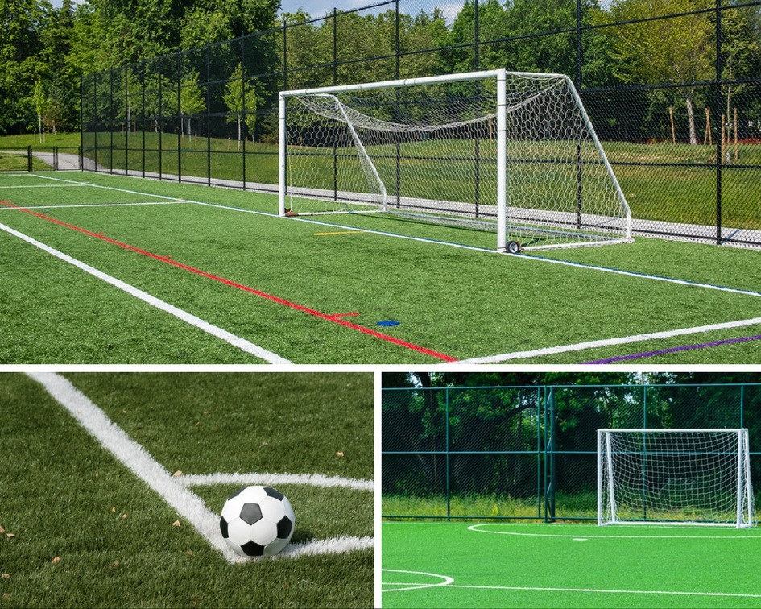

| Lack of resources to develop the sport: One of the points raised at the meeting by Mr. Kushal Das, AIFF was that despite strategic plans and targets that the AIFF is trying to put in place for women’s football, they are struggling with a lack of resources to fund such plans. He felt that the budget allocated to the AIFF for women’s football was insufficient to meet the requirements of their ambitious plans and it would require additional financial support. Another related point was insufficient human resources. At the present time, there are only two dedicated staff members for women’s football at AIFF. Mr. Das also raised the point that even State Associations were limited due their lack of financial resources. “The State Associations do not have the money to create a structure and unless they create a structure they won’t get the money so it’s a strange situation. To a certain extent the AIFF is also in the same boat, but the State Associations are much worse off, many of them.” | |
|  | Infrastructure issues Anjan Roy felt that there was an underutilization of existing infrastructure, especially in Delhi. He pointed out that there is world class sporting infrastructure in Delhi, or rather which was world class at the time it was set up, which has been completely unused and due to lack of proper maintenance was just going to waste. He wanted to know who exactly was responsible for maintaining such structures. Was it SAI, was it AIFF or yet another third party? He wanted to understand the lay of the land, in terms of how many bodies were involved in this. Mr. Das explained that stadiums were mainly owned by the state government and in some cases SAI which is part of the Sports Ministry. He spoke of an instance when the Nehru stadium was shut down after the Commonwealth Games fiasco how the AIFF reached out to the sports minister and sought permission to use the grounds to play some football games such as the SAFF championship, Nehru cup and Bayern Munich game. Mr. Das went on to explain that in order to do so, AIFF spent a lot of money (approx. 40 lacs) and refurbished the pitch. However there was no maintenance at all from SAI and when the AIFF wanted to use the grounds for another Nehru cup they discovered that they would have to re-do the pitch again thereby wasting valuable financial resources. He went on to point out that therefore support from the Government not only meant financial support, it is support for maintaining the infrastructure. Priti Srivastava said that IMG Reliance was in talks with SAI with regard to handing over maintenance of the Jawaharlal Nehru Stadium and that as of this time, this matter is under consideration by SAI |
| Challenge of Changing Mindsets As a part of an NGO engaging in grassroots programmes using football as a development tool for young girls, Lora Prabhu felt that one of the biggest challenges faced was just getting the girls out of their homes and on to the playing fields. Generally families of these girls, especially the male figureheads, are unwilling to accept this change as it doesn’t fit in with their perceptions of what a woman or a girl’s role is. Socio-economic issues also come into play here as most of these families are poor and expect that their daughters should stay at home and even in her free time, help her mother run the household in order to allow her brother to go to school and engage in extra curricular activities which will help him develop and go on to become the breadwinner for the family, like his father before him. “This is the fundamental issue- a little girl will sacrifice for her brother, the mother will sacrifice for her husband, she will always eat last, brother goes out to play the little girl stays at home to do housework. So really positive embodiment talks about a space for yourself, a space for self care and that personal time and space is not something selfish but something which is absolutely essential and in the cultural context, how do you instill that?” |